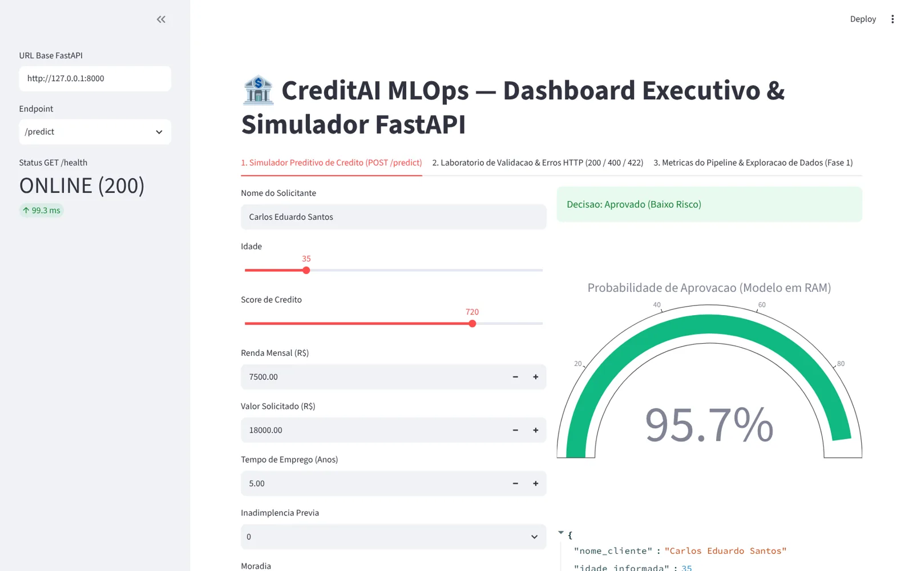

PARECER DE CRÉDITOnº 0001
300Score de crédito850
Probabilidade de aprovação95,7%
AprovadoBaixo Risco
POST /predict → 200 OK
Calculado agora, no seu navegador, pelo modelo treinado.
Um modelo de Machine Learning que avalia pedidos de empréstimo, servido por uma API REST em FastAPI e operado por um painel em Streamlit. Do notebook à produção, com validação, testes e versionamento.
Bancos, cooperativas e fintechs recebem milhares de pedidos de empréstimo. Decidir caso a caso gera espera e critérios diferentes entre analistas. O CreditAI coloca o modelo atrás de uma API que qualquer sistema consegue chamar.
POST /predict, com probabilidade e faixa de risco..joblibPré-processamento e classificador ficam no mesmo objeto. A API recebe os campos do cliente como chegam e o pipeline cuida de imputar, padronizar e codificar.
A separação acontece antes de qualquer cálculo estatístico. Imputação e escala aprendem só com o treino.
A base tem lacunas de propósito, como na vida real. O pipeline preenche sem descartar clientes.
handle_unknown="ignore": uma categoria nova em produção não derruba a API.class_weight="balanced": compensa os 57% de reprovados na base.Escolha um cenário. O pedido passa pelas mesmas camadas do código: rota, validação Pydantic, regras de negócio no serviço e modelo carregado na memória. Cada camada pode devolver um status diferente.
POST /predict422400predict_proba200O @asynccontextmanager carrega o modelo uma única vez no início. Cada barra acima é uma requisição atendida com o modelo já na memória, sem ler o disco.
Mude os dados e veja a decisão mudar na hora. O Random Forest treinado roda aqui, exportado para JavaScript: nas 3.000 linhas da base, as probabilidades batem com o Python até a 15ª casa decimal.
Escolha um cenário ou escreva o seu JSON. A resposta segue o contrato da FastAPI: 200 decisão, 422 validação do Pydantic, 400 regra de negócio, 404 e 405 rota ou método errado. Cada cenário pronto mostra também o que a API real devolveu quando a testamos.
| Clique em "Executar os 13 cenários". |
Métricas recalculadas com as versões fixadas no requirements.txt (scikit-learn 1.5.2). O conjunto de teste, com 450 clientes, só foi usado no final.
Quanto mais a curva encosta no canto superior esquerdo, melhor o modelo separa bons e maus pagadores.
A API aprova quando a probabilidade passa de 50%. Um banco mais conservador pode exigir mais. Veja o efeito nos 450 clientes de teste.
Importância por permutação: quanto a ROC-AUC do teste cai quando embaralhamos cada variável (15 repetições).
Taxa de aprovação real por grupo. São esses padrões que o modelo aprendeu.
Clientes aprovados se concentram acima de 650 pontos.
Medimos 500 chamadas reais a POST /predict com Uvicorn local, numa máquina de 2 CPUs. O gargalo não é o modelo: é o n_jobs=-1, que abre threads a cada predição de uma linha só.
Tempo de inferência por cliente, mediana de 200 execuções.
# credito_service.py: 1 chamada em vez de 2
- resultado_classe = int(self._pipeline.predict(dados)[0])
- probabilidades = self._pipeline.predict_proba(dados)[0]
+ probabilidades = self._pipeline.predict_proba(dados)[0]
+ resultado_classe = int(probabilidades[1] > probabilidades[0])
# no lifespan, depois de carregar o modelo
+ pipeline.named_steps["classificador"].set_params(n_jobs=1)Capturas reais do dashboard.py do notebook, com a API FastAPI no ar. O painel só conversa com o modelo por HTTP, como qualquer outro cliente da API.

credito-ml-api/ ├─ app/ │ ├─ schemas/cliente.py 422 │ ├─ services/credito_service.py 400 │ └─ routers/predict_routes.py ├─ main.py lifespan ├─ train_pipeline.py ├─ dashboard.py Streamlit ├─ tests/test_api.py ├─ data/ models/ └─ requirements.txt
Merge com --no-ff, sem apagar as features.
# 1. ambiente
python -m venv .venv && source .venv/bin/activate
pip install -r requirements.txt
# 2. treino (Fase 1)
python train_pipeline.py
# 3. API → http://127.0.0.1:8000/docs
uvicorn main:app --reload
# 4. painel → http://localhost:8501
streamlit run dashboard.py
# 5. testes
pytest -vn_jobs=1, uma chamada só).max_depth e min_samples_leaf maiores.